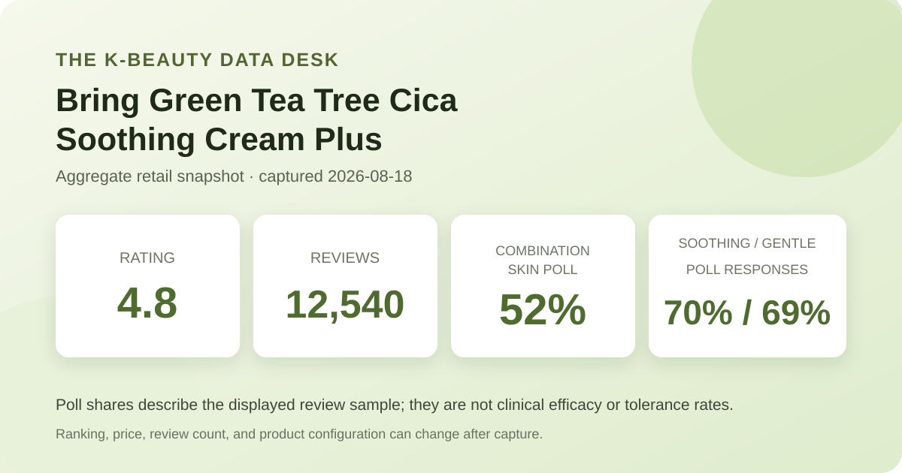

Published August 18, 2026 · Aggregate retail data only · No product was supplied for this article
Quick verdict: the captured data makes this a reasonable lightweight-cream candidate for shoppers who are specifically comparing soothing-oriented products. The page showed a 4.8 average across 12,540 review records, while combination skin was the largest skin-type response at 52%. Those are strong popularity and sample-composition signals, but they do not establish treatment of acne, irritation, or sensitivity.

The most useful signal here is not a single headline percentage. It is the combination of a large displayed review base, a high average, and three poll fields that point in a consistent direction. The product is being evaluated mostly in a combination-skin context, and the largest concern and stimulus responses lean toward soothing and gentleness. That makes the cream relevant to shoppers seeking a daily moisturizer with a lighter, calming positioning.
The limits matter just as much. The retail page did not expose a verifiable star-by-star distribution in the captured view, so this article does not reverse-engineer one from the 4.8 average. The page also did not provide controlled comparisons against another moisturizer. A high score therefore means broad satisfaction in the displayed record set; it does not tell us how much of the response came from texture, packaging, promotion, price, or skin results.
On August 18, 2026, the listing described a 100 ml Bring Green Tea Tree Cica Soothing Cream Plus offered in single- and two-unit configurations. It appeared at number 15 in the retailer's overall sales ranking during the capture. The page displayed a regular-price reference of ₩34,200 and a sale price starting at ₩18,900, with coupon messaging also visible. Those commercial details are a timestamp, not a promise: promotions, pack sizes, stock, and checkout prices can change quickly.
The review module displayed a 4.8 rating and 12,540 review records. Its three summary polls read:
A 4.8 average across 12,540 displayed records is a meaningful popularity signal because it is not based on a tiny sample. It suggests that severe dissatisfaction is not dominating the captured record set. It still cannot answer whether the current formulation will work for a particular person. Ratings combine different expectations, product configurations, purchase dates, climates, routines, and reasons for scoring.
There is another practical issue: the listing covers single- and multi-unit configurations, and reviews may be associated with related configurations. A shopper might be rating value, packaging, or a bundle as well as the cream itself. That makes the aggregate useful for screening but weaker for answering narrow questions such as whether the finish pills under a specific sunscreen or whether it is enough for very dry winter skin.
Combination skin is the largest displayed skin-type response. That makes the dataset particularly relevant to readers who also describe their skin that way, because they are not looking at a result dominated by a completely different self-reported group. But representation is not superiority. The poll does not show that combination skin achieved better outcomes than dry, oily, normal, or sensitive skin.
The soothing-related poll is the strongest of the three percentages. It shows that calming or soothing is central to how the product is being discussed and categorized in the review system. It does not show a measured reduction in redness, lesions, inflammation, or recovery time. Anyone managing persistent irritation, eczema, acne, or another skin condition should treat the product as a cosmetic moisturizer—not a substitute for medical advice or treatment.
The gentle response is encouraging but conditional. Thirty-one percent did not choose that leading option, and even a high aggregate share cannot rule out an individual reaction. Tea tree and “cica” in a product name are not enough to establish tolerance. The current ingredient label, fragrance components, other extracts, preservatives, and the rest of the routine can all matter. Patch testing remains sensible for reactive skin.
A good use of this data is to move the product from “unknown” to “worth a label check.” It is not enough to move from “unknown” to “guaranteed match.” Compare the current ingredient list with products you already tolerate, consider the climate and layers in your routine, and avoid buying a large bundle solely because a temporary promotion makes it look urgent.
The product is sold as a soothing cream, and the aggregate profile is compatible with shoppers seeking a less heavy moisturizer. However, the captured fields do not establish viscosity, dry-down time, occlusiveness, pilling risk, or compatibility with makeup and sunscreen. Those characteristics can also change with the amount applied and the products underneath.
Without verified directions captured in this snapshot, the safest routine framing is generic: introduce one new leave-on product at a time, use it in the moisturizer step according to the current package directions, and observe how the full routine behaves. More layers are not automatically better, especially if irritation is already present.
Bring Green Tea Tree Cica Soothing Cream Plus clears the first screening threshold: it has a large displayed review base, a high average, and a poll profile centered on combination skin, soothing, and gentleness. That is enough to justify a closer ingredient and price check for shoppers seeking a lighter everyday cream.
It does not clear the threshold for a universal recommendation. The star distribution was not visible in the captured view, the poll denominators are not stated, individual tolerance remains unpredictable, and commercial configurations can change. Treat the numbers as decision context, then verify the current label and buy the smallest sensible configuration if you are unsure.
Published by The K-Beauty Data Desk · Aggregate data captured 2026-08-18. I did not personally test the product, received no free product, and am not paid or approved by the brand. Check the dated source listing.
← All analyses · Review-volume rankings · Skin-poll index · Methodology